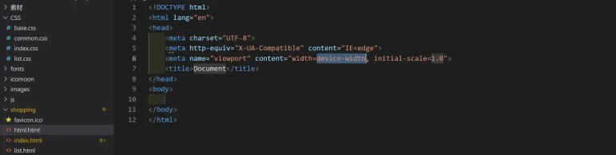

初步了解Code长啥样，有什么
标签: 界面布局
VSCode的学习网址
Mac OS官方教程：https://code.visualstudio.com/docs/setup/mac
（个人向）推荐的使用教程：https://geek-docs.com/vscode/vscode-tutorials/what-is-vscode.html
如何简单的找到官方教程？
简单配置
更改颜色主题
点击左下角管理，点击颜色主题
根据自己的需求进行修改
更改字体设置
点击管理中的设置选项

“Font Size”控制字体大小，“Font Family”控制字体系列，这里根据个人喜好设置
自动保存
点击管理中的设置

搜索自动保存
将设置里的“Auto Save”配置修改为afterDelay，并设置时间，这里我设置的是1000毫秒
工作台介绍
面板栏
命令面板是VSCode快捷键的主要交互界面，你可以通过F1或者Ctrl+Shift+P打开。你可以在命令面板中快速搜索命令并且执行。如果你的 VSCode 是简体中文版，那么你可以在命令面板里使用中文或者英文来搜索命令。VSCode 的绝大多数命令都可以在命令面板里搜到，所以熟练使用命令面板，你就可以摆脱鼠标，完全通过键盘操作来完成全部编码工作。

活动栏 最左侧的一列，包括资源管理器、查找、源代码管理、debug调式（一般用于后端的调理）、插件安装
状态栏
显示代码状态和调试状态；是否处于调试状态，代码是否在编辑状态等
编辑栏 编写代码的区域 
侧边栏 新建项目文件和文件夹，一般用于整体浏览项目布局

打开项目文件
点击左上角文件，打开文件夹
选择你需要打开的项目目录即可

当然你也可以选择新建文件或者文件夹
之后你就可以对项目文件进行编辑了~
快速编写代码小技巧
以HTML为例：
- !
Enter，快速生成HTML基本骨架 div*2Enter生成两个并列的divdiv.c1Enterdiv#d1Enterdiv{$}*数字多个平级标签的排序- ">"表示包含关系——ul >li*4 快速生成包含4个li的列表
← 回到主页